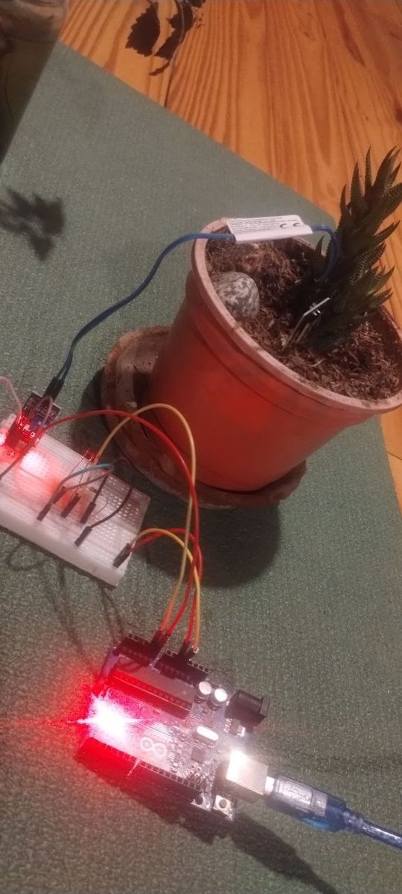
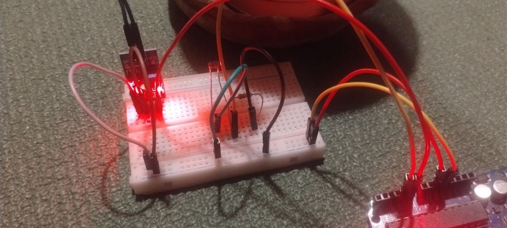

Explorando la realidad
El proyecto final: un aparato que arman ustedes para ver lo que no se ve a simple vista.
- explorar
- crear
- armar
- medir
- analizar datos


Zona de experimento🌱 La huerta
¿El sensor de luz puede ver un vuelo?
Lo que armaron en Tinkercad, ahora con la placa y los cables en la mesa. El cohete sube y baja en 6 segundos, y adentro la luz cambia todo el tiempo. Arman el aparato entero con un sensor de luz y averiguan si mide lo bastante rápido para ver un vuelo.
Todos juntos: el sensor de luz
hasta las 8:50Con el USB desenchufado. Antes de enchufar, otro del equipo revisa cable por cable.
Una pata a 5V. La otra a A1, y desde esa misma fila una resistencia de 10 kΩ (marrón, negro, naranja) a GND.
¿Les tocó el Nano? Va pinchado en la protoboard; los nombres de los pines están escritos en la placa.
Ver el código comentado
Los datos de su aparato
Dejen la placa conectada un minuto. Mientras mide: tápenlo, destápenlo, acérquenlo a la ventana, iluminen con el celu.
Analicen el gráfico, en el equipo:
- ¿Dónde se ve cuando taparon el sensor? ¿Y cuando lo iluminaron?
- ¿Cuál fue el número más bajo y el más alto? ¿Qué estaban haciendo en ese momento?
- Si lo dejaran toda la noche en la huerta, ¿cómo se vería el gráfico?
Todos: sumamos humedad y un LED
hasta las 9:05Para explorar la tierra de la huerta: ¿cuánta agua tiene? ¿cambia con la luz? Busquen un sensor de humedad y un LED con su resistencia de 220 Ω.
El sensor: VCC a 5V, GND a GND y AO (o AOUT) a A0.
El LED: la pata larga, con la resistencia de 220 Ω (rojo, rojo, marrón), al pin 9; la corta, a GND. Si no prende nunca, denlo vuelta.
El sensor de luz queda como estaba.
Anoten tres números (los ven en la tabla):
| En el aire | Tierra seca | Tierra mojada |
|---|---|---|
🛟 Un número entre la seca y la mojada. Si no llegan a medir, usen 700.
Ver el código comentado
Y suban los datos otra vez, con el botón de arriba.
🌍 Los cuatro aparatos 9:05, todos juntos
Cada equipo cuenta su aparato en un minuto.
Y la pregunta de todos: los que usaron horquilla y los que usaron capacitivo, ¿dan el mismo número en la misma tierra? ¿Se puede usar el umbral de otro equipo?
Guardado. Antes de desarmar: ¿qué quieren medir cuando vuelva la profe, el 11/11?
¿Terminaron? Armen su propio aparato, bloque por bloque: buzzer, RGB, botón, dos LED…
Arrastrá un bloque al programa, o tocalo para sumarlo al final. El color dice qué hace: mide muestra decide avisa espera
＋ Bloques de lo que pidieron a la mesa
Arrastrá acá el primer bloque.